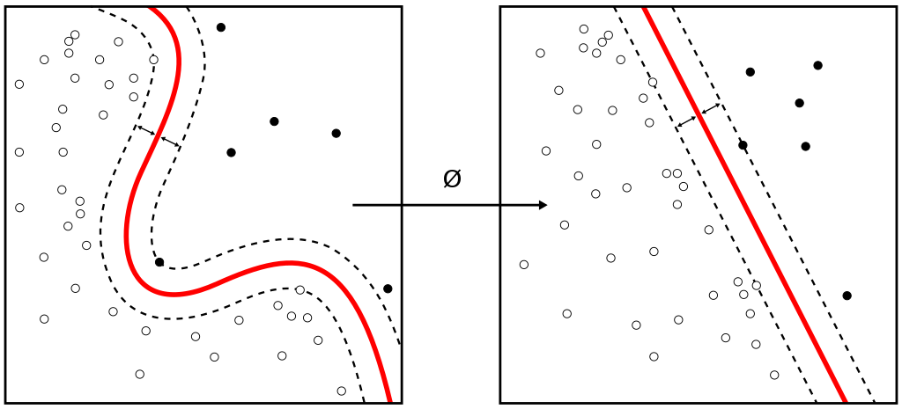

機器學習
因為做專題需要用到機器學習，而我對於機器學習完全沒有著墨，所以想先了解一下關於機器學習所用到的概念、實作方法或是演算法等等。
監督式學習
監督式學習(Supervised learning)是電腦從標籤化(labeled)的資訊中分析模式後做出預測的學習方式。標記過的資料就好比標準答案，電腦在學習的過程透過對比誤差，一邊修正去達到更精準的預測，這樣的方式讓監督式學習有準確率高的優點。
監督式學習方式需要倚靠大量的事前人工作業，將所有可能的特質標記起來，這過程相當繁複。當範圍擴大、資訊量增加，會更難去對資料標記出所有特徵，所以在面對未知領域時，幾乎是完全無法運作。
線性迴歸(Linear Regression)
概念和高中時所學的「回歸直線」是一樣的，就是根據一個或多個因變量(y)和自變量(x)來畫出趨勢線。
邏輯回歸(Logistic Regression)
將找「回歸直線」的方法用在二元性的資料(是/不是、符合/不符合)上，透過選取不同的特徵與權重來對樣本進行機率分類。
邏輯回歸會使用某種函數將機率值壓縮到某一特定範圍，如Sigmoid函數。S 函數是一種具有 S 形曲線、用於二分類的函數。
Support Vector Machine
SVM是一個可以將資料分成兩類的演算法，線性的資料它有辦法分，至於非線性的，它也可以。這個演算法會找出一個讓margin達到最大的平面來區分資料成兩個部分。
- margin就是資料的兩個區塊中，離平面最近的點和該平面的距離。

圖源：維基百科
決策樹(Decision Tree)
非監督式學習
非監督式學習(Unsupervised Learning)的訓練資料不需要事先以人力處理標籤，機器面對資料時，做的處理是依照關聯性去歸類(Co-occurance Grouping)、找出潛在規則與套路 (Association Rule Discovery)、形成集群(Clustering)，不對資訊有正確或不正確的判別。
非監督式學習的特性讓它在資料探勘初期是好用的工具。對比監督式學習，非監督式學習可以大大減低繁瑣的人力工作，找出潛在的規則。但這樣的方式，也會造成較多功耗，甚至，也可能造成不具重要性的特徵（Feature) 被過度放大，導致結果偏誤、無意義的分群結果。
強化式學習
強化式學習(Reinforcement Learning)的特徵是不需給機器任何的資料，讓機器直接從互動中去學習，這是最接近大自然與人類原本的學習方式。
機器透過環境的正向、負向回饋 (positive / negative reward)，從中自我學習，並逐步形成對回饋刺激(stimulus)的預期，做出越來越有效率達成目標的行動(action)，這個訓練過程的目標是獲取最大利益。
參考文獻：
1.十種機器學習演算法圖解-監督式學習篇
2.三大類機器學習：監督式、強化式、非監督式
3.支援向量機(Support Vector Machine)介紹